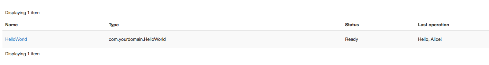
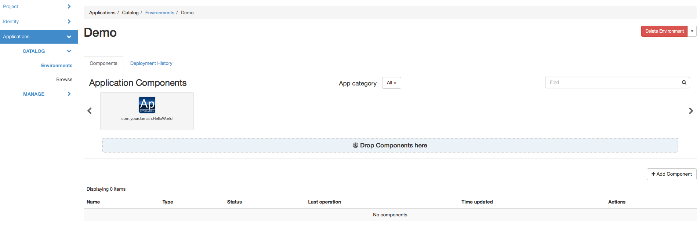
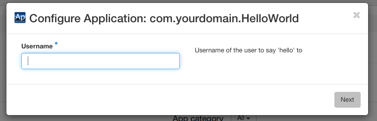
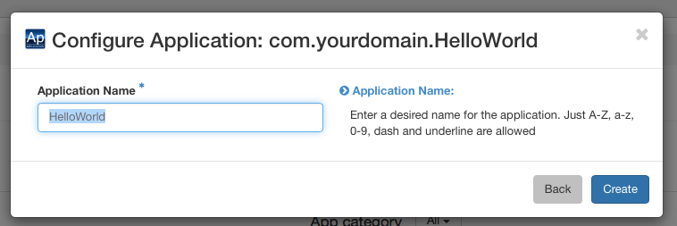

Part 2: Customizing your Application Package¶
We’ve built a classic “Hello, World” application during the first part of this tutorial, now let’s play a little with it and customize it for better user and developer experience - while learning some more Murano features, of course.
Adding user input¶
Most deployment scenarios for cloud applications require user input. It may be various options which should be applied in software configuration files, passwords for default administrator’s accounts, IP addresses of external services to register with and so on. Murano Application Packages may define the user inputs they expect, prompt the end-users to pass the values as these inputs, so that they may utilize these values during application lifecycle workflows.
In Murano user input is defined for each class as input properties. Properties are object-level variables of the class, they may be of different kinds, and the input properties are the ones which are expected to contain user input. See Properties for details on other kinds of them.
To define properties of the class you should add a Properties block
somewhere in the YAML file of that class.
Note
Usually it is better to place this block after the Name and Extends
blocks but before the Methods block. Following this suggestion will
improve the overall readability of your code.
The Properties block should contain a YAML dictionary, mapping the names of
the properties to their descriptions. These descriptions may specify the kind
of properties, the restrictions on the type and value of the property
(so-called contracts), provide default value for the property and so on.
Let’s add some user input to our “Hello, World” application. Let’s ask the end
user to provide their name, so the application will greet the user instead of
the whole world. To do that, we need to edit our com.yourdomain.HelloWorld
class to look the following way:
1 2 3 4 5 6 7 8 9 10 11 12 13 14 | Name: com.yourdomain.HelloWorld
Extends: io.murano.Application
Properties:
username:
Usage: In
Contract: $.string().notNull()
Methods:
deploy:
Body:
- $reporter: $this.find('io.murano.Environment').reporter
- $reporter.report($this, "Hello, World!")
|
On line 6 we declare a property named username, on line 7 we specify that
it is an input property, and on line 8 we provide a contract, i.e. a
restriction on the value. This particular one states that the property’s value
should be a string and should not be null (i.e. should be provided by the
user).
Note
Although there are a total of 7 different kinds of properties, it turns
out that the input ones are the most common. So, for input properties you
may omit the Usage part - all the properties without an explicit usage
are considered to be input properties.
Once the property is declared within the Properties block, you may access
it in the code of the class methods. Since the properties are object-level
variables they may be accessed by calling a $this variable (which is a
reference to a current instance of your class) followed by a dot and a property
name. So, our username property may be accessed as $this.username.
Let’s modify the deploy method of our class to make use of the property to
greet the user by name:
Methods:
deploy:
Body:
- $reporter: $this.find('io.murano.Environment').reporter
- $reporter.report($this, "Hello, " + $this.username + "!")
OK, let’s try it. Save the file and archive your package directory again, then re-import your zip-file to the Murano Catalog as a package. You’ll probably get a warning, since the package with the same name already exists in the catalog (we imported it there in the previous part of the tutorial), so murano CLI will ask you if you want to update it. In production it is better to make a newer version of our application and thus to have both in the catalog, but for now let’s just overwrite the old package with the new one.
But you cannot deploy it with the old json input we used in the previous part:
since the property’s contract has that .notNull() part it means that the
input should contain the value for the property. If you attempt to deploy an
application without this value, you’ll get an error.
So, let’s edit the input.json file we created in the previous part and add
the value of the property to the input:
1 2 3 4 5 6 7 8 9 10 11 12 13 14 | [
{
"op": "add",
"path": "/-",
"value": {
"?": {
"name": "Demo",
"type": "com.yourdomain.HelloWorld",
"id": "42"
},
"username": "Alice"
}
}
]
|
Save the json file and repeat the steps from the previous part to create an environment, open a configuration session, add an application and deploy it. Now in the ‘Last Operation’ of Murano Dashboard you will see the updated reporting message, containing the username:
{kind=link}
Adding user interface¶
As you can see in all the examples above, deploying applications via Murano CLI is quite a cumbersome process: the user has to create environments and sessions and provide the appropriate json-based input for the application.
This is inconvenient for a real user, of course. The CLI is intended to be used by various external automation systems which interact with Murano via scripts, but the human users will use Murano Dashboard which simplifies all those actions and provides a nice interface for them.
Murano Dashboard provides a nice interface to create and deploy environments and manages sessions transparently for the end users, but when it comes to the generation of input JSON it can’t do it out of the box: it needs some hints from the package developer. By having hints, Murano Dashboard will be able to generate nicely looking wizard-like dialogs to configure applications and add them to an environment. In this section we’ll learn how to create these UI hints.
The UI hints (also called UI definitions) should be defined in a separate
YAML file (yeah, YAML again) in your application package. The file should be
named ui.yaml and placed in a special directory of your package called
UI.
The main section which is mandatory for all the UI definitions is called
Application: it defines the object structure which should be passed as the
input to Murano. That’s it: it is equivalent to the JSON input.json we were
creating before. The data structure remains the same: ?-header is for system
properties and all other properties belong inside the top level of the object.
The Application section for our modified “Hello, World” application should
look like this:
1 2 3 4 | Application:
?:
type: com.yourdomain.HelloWorld
username: Alice
|
This input is almost the same as the input.json we used last time, except
that the data is expressed in a different format. However, there are several
important differences: there are not JSON-Patch related keywords (“op”, “path”
and “value”) - that’s because Murano Dashboard will generate them
automatically.
Same is true for the missing id and name from the ?-header of the
object: the dashboard will generate the id on its own and ask the end-user for
the name, and then will insert both into the structure it sends to Murano.
However, there is one problem in the example above: it has the username
hardcoded to be Alice. Of course we do not want the user input to be hardcoded:
it won’t be an input then. So, let’s define a user interface which will ask the
end user for the actual value of this parameter.
Since Murano Dashboard works like a step-by-step wizard, we need to define at least one wizard step (so-called form) and place a single text-box control into it, so the end-user will be able to enter his/her name there.
These steps are defined in the Forms section of our ui definition file.
This section should contain a list of key-value pairs. Keys are the identifiers
of the forms, while values should define a list of field objects. Each field
may define a name, a type, a description, a requirement indicator and some
other attributes intended for advanced usage.
For our example we need a single step with a single text field. The Forms
section should look like this:
1 2 3 4 5 6 7 | Forms:
- step1:
fields:
- name: username
type: string
description: Username of the user to say 'hello' to
required: true
|
This defines the needed textbox control in the ui. Finally, we need to bind
the value user puts into that textbox to the appropriate position in our
Application section. To do that we replace the hardcoded value with an
expression of form $.<formId>.<fieldName>. In our case this will be
$step1.username.
So, our final UI definition will look like this:
1 2 3 4 5 6 7 8 9 10 11 12 | Application:
?:
type: com.yourdomain.HelloWorld
username: $.step1.username
Forms:
- step1:
fields:
- name: username
type: string
description: Username of the user to say 'hello' to
required: true
|
Save this code into your UI/ui.yaml file and then re-zip your package
directory and import the resulting archive to Murano Catalog again.
Now, let’s deploy this application using Murano Dashboard.
Open Murano Dashboard with your browser, navigate to “Applications/Catalog/Environments” panel, click the “Create Environment” button, enter the name for your environment and click “Create”. You’ll be taken to the contents of your environment: you’ll see that it is empty, but on top of the screen there is a list of components you may add to it. If your Murano Catalog was empty when you started this tutorial, this list will contain just one item: your “Hello, World” application. The screen should look like this:
{kind=link}
Drag-n-drop your “com.yourdomain.HelloWorld” application from the list on top of the screen to the “Drop components here” panel beneath it. You’ll see a dialog, prompting you to enter a username:
{kind=link}
Enter the name and click “Next”. Although you’ve configured just one step of the wizard, the actual interface will consist of two: the dashboard always adds a final step to prompt the user to enter the name of the application instance within the environment:
{kind=link}
When you click “Create” button an instance of your application will be added to the environment, you’ll see it in the list of components:

So, now you may click the “Deploy this Environment” button and the application will greet the user with the name you’ve entered.

Simplifying code: namespaces¶
Now that we’ve learned how to simplify the user’s life by adding a UI definition, let’s simplify the developer’s life a bit.
When you were working with Murano classes in the previous part you probably noticed that the long class names with all those domain-name-based segments were hard to write and that it was easy to make a mistake:
1 2 3 4 5 6 7 8 9 | Name: com.yourdomain.HelloWorld
Extends: io.murano.Application
Methods:
deploy:
Body:
- $reporter: $this.find('io.murano.Environment').reporter
- $reporter.report($this, "Hello, World!")
|
To simplify the code we may use the concept of namespaces and short names.
All but last segments of a long class name are namespaces, while the last
segment is a short name of a class. In our example com.yourdomain is a
namespace while the HelloWorld is a short name.
Short names have to be unique only within their namespace, so they tend to be expressive, short and human readable, while the namespaces are globally unique and thus are usually long and too detailed.
Murano provides a capability to abbreviate long namespaces with a short alias.
Unlike namespaces, aliases don’t need to be globally unique: they have
to be unique only within a single file which uses them. So, they may be very
short. So, in your file you may abbreviate your com.yourdomain namespace
as my, and standard Murano’s io.murano as std. Then instead of a
long class name you may write a namespace alias followed by a colon character
and then a short name, e.g. my:HelloWorld or std:Application. This
becomes very helpful when you have lots of class names in your code.
To use this feature, declare a special section called Namespaces in your
class file. Inside that section provide a mapping of namespace aliases to full
namespaces, like this:
Namespaces:
my: com.yourdomain
std: io.murano
Note
Since namespaces are often used in all other sections of files it is considered good practice to declare this section at a very top of your class file.
Quite often there is a namespace which is used much more often than others in a given file. In this case it would be beneficial to declare this namespace as a default namespace. Default namespace does not need a prefix at all: you just type short name of the class and Murano will interpret it as being in your default namespace. Use ‘=’ character to declare the default namespace in your namespaces block:
1 2 3 4 5 6 7 8 9 10 11 12 13 | Namespaces:
=: com.yourdomain
std: io.murano
Name: HelloWorld
Extends: std:Application
Methods:
deploy:
Body:
- $reporter: $this.find(std:Environment).reporter
- $reporter.report($this, "Hello, World!")
|
Notice that Name definition at line 5 uses the default namespace: the
HelloWorld is not prefixed with any namespaces, but is properly resolved
to com.yourdomain.HelloWorld because of the default namespace declaration
at line 2. Also, because Murano recognizes the ns:Class syntax there is
no need to enclose std:Environment in quote marks, though it will also
work.
Adding more info for the catalog¶
As you could see while browsing Murano Catalog your application entry in it is not particularly informative: the user can’t get any description about your app, and the long domain-based name is not very user-friendly aither.
This can easily be improved. The manifest.yaml which we wrote in the first
part contained only mandatory fields. This is how it should look by now:
1 2 3 4 | FullName: com.yourdomain.HelloWorld
Type: Application
Classes:
com.yourdomain.HelloWorld: HelloWorld.yaml
|
Let’s add more fields here.
First, you can add a Name attribute. Unlike FullName, it is not a
unique identifier of the package. But, if specified, it overrides the name of
the package that is displayed in the catalog.
Then there is a Description field. This is a multi-line text attribute,
providing detailed info about your package.
Then an Author field: here you can put your name or the name of your
company, so it will be displayed in catalog as the name of the package
developer. If this field is omitted, the catalog will consider the package to
be made by “OpenStack”, so don’t forget this field if you care about your
copyright.
When you add these fields your manifest may look like this:
1 2 3 4 5 6 7 8 9 10 | FullName: com.yourdomain.HelloWorld
Type: Application
Name: 'Hello, World'
Description: |
A package which demonstrates
development for Murano
by greeting the user.
Author: John Doe
Classes:
com.yourdomain.HelloWorld: HelloWorld.yaml
|
You may also add an icon to be displayed for your application. To do that just
place a logo.png file with an appropriate image into the root folder of
your package.
Zip the package directory and re-upload the file to the catalog. Then use Murano Dashboard and navigate to Applications/Catalog/Browse panel. You’ll see that your app gets a logo, a more appropriate name and a description:

So, here we’ve learned how to improve both the user’s and developer’s experience with developing Murano application packages. That was all we could do with the oversimplistic “Hello World” app. Let’s move forward and touch some real-life applications.